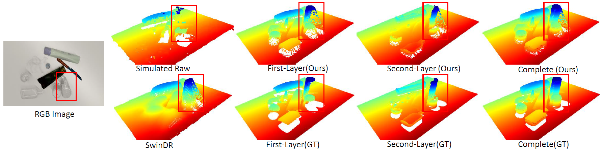

Results
We visualize a qualitative comparison of the predictions for both layers. The simulated raw point cloud contains missing and wrong points. Our method performs much better in both the first and second layers, yielding a high-quality complete point cloud reconstruction.

We tested our method in real-world experiments, showing sim2real results.
The test cases demonstrate significant potential in our methods for grasping transparent and specular objects.